컴퓨터활용능력-1급 (2018-09-01 기출문제)
1과목: 컴퓨터 일반
1. 다음 중 마이크로프로세서(Microprocessor)에 관한 설명으로 옳지 않은 것은?
- 제어장치, 연산장치, 주기억장치가 하나의 반도체 칩에 내장된 장치이다.
- 클럭 주파수와 내부 버스의 폭(bandwidth)으로 성능을 평가한다.
- 개인용 컴퓨터의 중앙처리장치로 사용된다.
- 작은 규모의 임베디드 시스템이나 휴대용 기기에도 사용된다.
(정답률: 68%)

2. 다음 중 컴퓨터의 연산장치에 있는 레지스터에 관한 설명으로 옳지 않은 것은?
- 2진수 덧셈을 수행하는 가산기(Adder)가 있다.
- 뺄셈을 수행하기 위해 입력된 값을 보수로 변환하는 보수기(Complementor)가 있다.
- 연산 결과를 일시적으로 저장하는 누산기(Accumulator)가 있다.
- 연산에 사용될 데이터를 기억하는 상태 레지스터(Status Register)가 있다.
(정답률: 74%)
3. 다음 중 Windows 방화벽 기능에 대한 설명으로 옳지 않은 것은?(윈도우 10 검증 완료)
- 통신을 허용할 프로그램 및 기능에 대한 설정을 할 수 있다.
- 각 네트워크 위치 유형에 따른 외부 연결의 차단과 알림을 설정할 수 있다.
- 내 컴퓨터에서 외부로 나가는 패킷의 내용을 체크하여 인증된 패킷만 내보내도록 설정할 수 있다.
- 역추적 기능으로 외부 침입자의 흔적을 찾을 수 있다.
(정답률: 83%)
4. 다음 중 Windows [제어판]-[시스템]에서 실행 가능한 작업에 대한 설명으로 옳지 않은 것은?(윈도우 10 검증 완료)
- Windows의 버전과 시스템에 대한 기본 정보를 확인할 수 있다.
- Windows 정품 인증을 위한 제품키를 변경할 수 있다.
- 네트워크에서 확인 가능한 사용자 컴퓨터 이름을 변경할 수 있다.
- 컴퓨터에 설치된 응용 프로그램을 설치하거나 제거할 수 있다.
(정답률: 77%)
5. 다음 중 Windows에서 하드 디스크의 용량 부족 문제가 발생하였을 때의 해결 방법으로 적절하지 않은 것은?(윈도우 10 검증 완료)
- 사용 빈도가 낮은 파일은 백업한 후 하드 디스크에서 삭제한다.
- 바이러스에 감염된 파일을 모두 삭제한다.
- 사용하지 않는 Windows 구성 요소를 제거한다.
- 디스크 정리를 수행하여 불필요한 파일을 삭제한다.
(정답률: 78%)
6. 다음 중 Windows의 탐색기에서 검색 상자를 사용하여 파일이나 폴더를 찾는 방법으로 옳지 않은 것은?(윈도우 10 검증 완료)
- 검색 상자에서 찾으려는 파일이나 폴더명을 입력하면 자동으로 필터링되어 결과가 표시된다.
- 검색 내용에 '$'를 붙이면 해당 내용이 포함되지 않은 파일이나 폴더를 검색한다.
- '*'나 '?' 등의 와일드카드 문자를 사용하여 파일이나 폴더를 검색할 수 있다.
- 특정 파일 그룹을 정기적으로 검색하는 경우 검색 저장 기능을 이용하면 다음에 사용할 때 원래 검색과 일치하는 최신 파일을 표시해 준다.
(정답률: 83%)
7. 다음 중 Windows의 레지스트리에 관한 설명으로 옳지 않은 것은?(윈도우 10 검증 완료)
- 컴퓨터에 설치된 모든 하드웨어와 소프트웨어의 실행 정보를 관리하는 데이터베이스이다.
- 레지스트리 정보는 Windows가 작동하는 동안 지속적으로 참조된다.
- Windows에 탑재된 레지스트리 편집기는 'reg.exe' 이다.
- 레지스트리에 문제가 발생하면 시스템 부팅이 안 될 수도 있다.
(정답률: 75%)
8. 다음 중 서버에 데이터를 전송하기 전 아이디나 비밀번호의 입력 여부 또는 수량 입력과 같은 입력 사항을 확인할 때 사용하는 웹 프로그래밍 언어로 가장 적절한 것은?
- CSS
- UML
- Java Script
- VRML
(정답률: 77%)
9. 다음 중 컴퓨터에서 사용되는 운영체제의 목적에 관한 설명으로 옳지 않은 것은?
- 시스템에 작업을 의뢰한 시간부터 처리가 완료될 때까지 걸린 시간을 의미하는 반환 시간의 단축이 요구된다.
- 일정 시간 내에 시스템이 처리하는 일의 양을 의미하는 처리 능력의 향상이 요구된다.
- 시스템이 주어진 문제를 정확하게 해결하는 정도를 의미하는 신뢰도의 향상이 요구된다.
- 시스템을 사용할 수 있는 사용자의 수를 의미하는 사용 가능도의 향상이 요구된다.
(정답률: 82%)
10. 다음 중 컴퓨터에서 하드 디스크를 연결하는 SATA 방식에 관한 설명으로 옳지 않은 것은?
- 직렬 인터페이스 방식을 사용한다.
- PATA 방식보다 데이터 전송 속도가 빠르다.
- 핫 플러그인 기능을 지원한다.
- EIDE는 일반적으로 SATA를 의미한다.
(정답률: 79%)
11. 다음 중 유비쿼터스 컴퓨팅 기반 기술에 대한 설명으로 옳지 않은 것은?
- 유비쿼터스 컴퓨팅이 가능하기 위한 고속의 네트워크 전송기술
- 휴대성을 위한 초소형, 초경량의 하드웨어 제조기술
- 개인별 최적화된 소프트웨어의 제작, 유통기술
- 기본적으로 사람이 정보를 수집하는 작업이 요구되는 기술
(정답률: 85%)
12. 다음 중 컴퓨터를 이용한 정보처리 방식에서 분산처리 시스템에 관한 설명으로 적절한 것은?
- 여러 개의 CPU와 하나의 주기억장치를 이용하여 여러 프로그램을 동시에 처리하는 방식이다.
- 여러 명의 사용자가 사용하는 시스템에서 시간을 분할하여 프로그램을 실행하는 시스템이다.
- 여러 대의 컴퓨터들에 의해 작업한 결과를 통신망을 이용하여 상호 교환할 수 있도록 연결되어 있는 시스템이다.
- 하나의 CPU와 주기억장치를 이용하여 여러 개의 프로그램을 동시에 처리하는 방식이다.
(정답률: 57%)
13. 다음 중 멀티미디어에서 사용되는 그래픽 기법에 관한 설명으로 옳지 않은 것은?
- 렌더링(Rendering)은 3차원 애니메이션을 만드는 작업의 일부이다.
- 모핑(Morphing)은 두 개의 이미지를 부드럽게 연결하여 변화하거나 통합하는 작업이다.
- 앨리어싱(Aliasing)은 이미지 표현에 계단 현상을 제거하는 작업이다.
- 디더링(Dithering)은 제한된 색상을 조합하여 새로운 색을 만드는 작업이다.
(정답률: 76%)
14. 다음 중 JPEG 파일 형식에 대한 설명으로 옳지 않은 것은?
- 저장 시 사용자가 임의로 압축률을 조정할 수 있다.
- 사진과 같이 다양한 색을 가진 정지영상을 표현하기에 적합하다.
- 8비트 알파 채널을 이용하여 부드러운 투명층을 표현할 수 있다.
- 압축률이 높을수록 보다 많은 정보를 지우므로 이미지의 질이 낮아진다.
(정답률: 64%)
15. 다음 중 정보통신기술 관련 용어에 대한 설명으로 옳지 않은 것은?
- IoT: 사물에 센서를 부착하여 실시간으로 정보를 모은 후 인터넷을 통해 개별 사물들 간에 정보를 주고 받게 하는 기술
- Wibro: 고정된 장소에서 초고속 인터넷을 이용할 수 있게 하는 무선 인터넷 서비스
- VoIP: 음성 데이터를 인터넷 프로토콜 네트워크를 통해 전송하여 통화할 수 있게 하는 음성 통신 기술
- RFID: 제품 식별, 출입 관리 등 다양한 분야에서 활용되는 기술로 전파를 이용하여 정보를 인식하는 기술
(정답률: 84%)
16. 다음 중 정보사회에서 정보 보안을 위협하는 스니핑 (Sniffing)에 관한 설명으로 옳은 것은?
- 네트워크를 통해 연속적으로 자기를 복제하여 시스템 부하를 높여 결국 시스템을 다운시킨다.
- 자기복제 능력은 없으나 프로그램 내에 숨어 있다가 해당 프로그램이 실행될 때 활성화 되어 부작용을 일으킨다.
- 정상적으로 실행되거나 검증된 데이터인 것처럼 속여 접속을 시도하거나 권한을 얻는 것을 말한다.
- 사용자가 전송하는 데이터를 훔쳐보는 것으로 네트워크의 패킷을 엿보면서 계정과 패스워드를 알아낸다.
(정답률: 82%)
17. 다음 중 인터넷 주소와 관련된 설명으로 옳지 않은 것은?
- IPv4는 클래스별로 주소 부여체계가 달라지며, A Class는 소규모 통신망에 사용된다.
- URL은 인터넷 상에 존재하는 각종 자원이 있는 위치를 나타내는 표준 주소 체계이다.
- IPv6은 128비트, IPv4는 32비트로 구성된 주소 체계 방식이다.
- DNS는 도메인 네임을 IP 주소로 변환하거나 그 반대의 변환을 수행하는 시스템이다.
(정답률: 74%)
18. 다음 중 TCP/IP를 구성하는 각 계층에 관한 설명으로 옳지 않은 것은?
- 응용 계층은 응용 프로그램 간의 데이터 송수신을 담당한다.
- 전송 계층은 호스트들 간의 신뢰성 있는 통신을 지원한다.
- 인터넷 계층은 데이터 전송을 위한 주소지정 및 경로 설정을 지원한다.
- 링크 계층은 사용자가 컴퓨터에 접근할 수 있도록 서비스를 제공한다.
(정답률: 54%)
19. 다음 중 정보보안을 위해 사용하는 공개키 암호화 기법에 대한 설명으로 옳지 않은 것은?
- 알고리즘이 복잡하며 암호화와 복호화 속도가 느리다.
- 키의 분배가 용이하고 관리해야 할 키의 수가 적다.
- 비대칭 암호화 기법이라고도 하며 대표적으로 DES가 있다.
- 데이터를 암호화할 때 사용하는 키를 공개하고 복호화 할 때 키는 비밀로 한다.
(정답률: 73%)
20. 다음 중 네트워크 운영 방식 중 하나인 클라이언트/서버 방식에 관한 설명으로 옳은 것은?
- 서버와 클라이언트가 모두 처리 능력을 가지며, 분산처리 환경에 적합하다.
- 중앙 컴퓨터가 모든 단말기에서 요구하는 데이터 처리를 전담한다.
- 모든 단말기가 동등한 계층으로 연결되어 모두 클라이언트와 서버 역할을 할 수 있다.
- 단방향 통신 방식으로 데이터 처리를 위한 대기시간이 필요하다.
(정답률: 68%)
2과목: 스프레드시트 일반
21. 다음 중 아래의 괄호 안에 들어갈 기능명으로 옳은 것은?
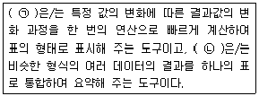
- ㉠: 데이터 표 ㉡: 통합
- ㉠: 정렬 ㉡: 시나리오 관리자
- ㉠: 부분합 ㉡: 피벗 테이블
- ㉠: 목표값 찾기 ㉡: 데이터 유효성 검사
(정답률: 77%)
22. 다음 중 고급 필터 실행을 위한 조건 지정 방법에 대한 설명으로 옳지 않은 것은?
- 함수나 식을 사용하여 조건을 입력하면 셀에는 비교되는 현재 대상의 값에 따라 TRUE나 FALSE가 표시된다.
- 함수를 사용하여 조건을 입력하는 경우 원본 필드명과 동일한 필드명을 조건 레이블로 사용해야 한다.
- 다양한 함수와 식을 혼합하여 조건을 지정할 수 있다.
- 텍스트 데이터를 필터링할 때 대/소문자는 구분되지 않으나 수식으로 대/소문자를 구분하여 검색할 수 있다.
(정답률: 60%)
23. 다음 중 피벗 테이블 보고서와 피벗 차트 보고서에 대한 설명으로 옳지 않은 것은?
- 피벗 테이블 보고서에서는 값 영역에 표시된 데이터 일부를 삭제하거나 추가할 수 없다.
- 피벗 차트 보고서를 만들 때마다 동일한 데이터로 관련된 피벗 테이블 보고서가 자동으로 생성된다.
- 피벗 차트 보고서는 분산형, 주식형, 거품형 등 다양한 차트 종류로 변경할 수 있다.
- 행 또는 열 레이블에서의 데이터 정렬은 수동(항목을 끌어 다시 정렬), 오름차순, 내림차순 중 선택할 수 있다.
(정답률: 52%)
24. 다음 중 [외부 데이터 가져오기] 기능을 이용하여 텍스트 파일을 불러오는 경우에 대한 설명으로 옳은 것은?
- 가져 온 데이터는 원본 텍스트 파일이 수정되면 즉시 수정된 내용이 자동으로 반영된다.
- 데이터의 구분 기호로 탭, 세미콜론, 쉼표, 공백 등이 기본으로 제공되며, 사용자가 원하는 구분 기호를 설정할 수도 있다.
- 텍스트 파일에서 특정 열(column)만 선택하여 가져올 수는 없다.
- 기본적으로 사용되는 텍스트 파일의 형식은 *.txt, *.prn, *.hwp이다.
(정답률: 53%)
25. 다음 중 작성된 매크로를 엑셀이 실행될 때마다 모든 통합 문서에서 실행할 수 있도록 하는 방법으로 옳은 것은?
- 작성된 매크로를 Office 설치 폴더 내 [XLSTART] 폴더에 Auto.xlsb로 저장한다.
- 작성된 매크로를 임의의 폴더에 Personal.xlsb로 저장한다.
- 작성된 매크로를 Office 설치 폴더 내 [XLSTART] 폴더에 Personal.xlsb로 저장한다.
- 작성된 매크로를 임의의 폴더에 Auto.xlsb로 저장한다.
(정답률: 66%)
26. 다음 중 아래의 시트에서 주어진 표 전체만 선택하는 방법으로 옳지 않은 것은?
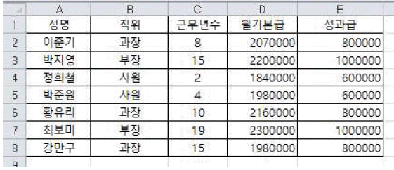
- 행 머리글과 열 머리글이 만나는 워크시트 왼쪽 맨 위의 [모두 선택] 단추()를 클릭한다.
- [A1] 셀을 클릭하고 <Shift>키를 누른 채 [E8] 셀을 클릭한다.
- [B4] 셀을 클릭하고 <Ctrl>+<A>키를 누른다.
- [A1] 셀을 클릭하고 <F8>키를 누른 뒤에 <→>키를 눌러 E열까지 이동하고 <↓>키를 눌러 8행까지 선택한다.
(정답률: 62%)
27. 아래는 워크시트 [A1] 셀에서 [매크로 기록]을 클릭하고 작업을 수행한 과정을 Visual Basic Editor의 코드 창에서 확인한 결과이다. 다음 중 이에 대한 설명으로 옳지 않은 것은?
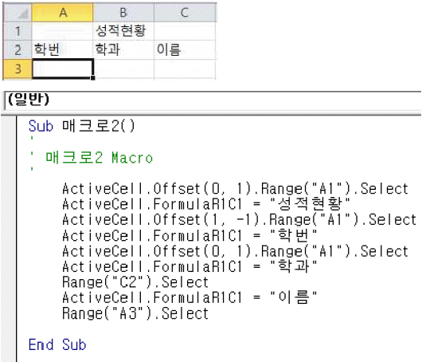
- 매크로의 이름은 '매크로2'이다.
- '성적현황','학번','학과'는 상대 참조로 기록 되었다.
- [A3] 셀을 클릭하고 매크로를 실행한 후의 셀 포인터 위치는 [A5] 셀이다.
- [B3] 셀을 클릭하고 매크로를 실행한 후의 [C3] 셀의 값은'성적현황'이다.
(정답률: 64%)
28. 다음 중 엑셀의 상태 표시줄에 대한 설명으로 옳지 않은 것은?
- 엑셀의 현재 작업 상태를 표시하며, 선택 영역에 대한 평균, 개수, 합계 등의 옵션을 선택하여 다양한 계산 결과를 표시할 수 있다.
- 확대/축소 컨트롤을 이용하면 10%~400% 범위 내에서 문서를 쉽게 확대/축소할 수 있다.
- 자주 사용하는 도구들을 모아서 간단히 추가하거나 제거할 수 있으며, 리본 메뉴 아래에 표시할 수도 있다.
- 기본적으로 상태 표시줄 왼쪽에는 매크로 기록 아이콘 ()이 있으며, 매크로 기록 중에는 기록 중지 아이콘 ()으로 변경된다.
(정답률: 64%)
29. 다음 중 워크시트의 이름 작성에 관한 설명으로 옳지 않은 것은?
- 시트 탭의 시트 이름을 더블 클릭하여 이름을 수정할 수 있다.
- 시트 이름은 영문 기준으로 대·소문자 구분 없이 최대 255자까지 지정할 수 있다.
- 하나의 통합 문서 안에서는 동일한 시트 이름을 지정할 수 없다.
- 시트 이름 입력 시 *, ?, /, [ ] 등의 기호는 입력되지 않는다.
(정답률: 67%)
30. 다음 중 엑셀의 화면 설정에 대한 설명으로 옳은 것은?
- 워크시트 화면의 확대/축소 배율 지정은 모든 시트에 같은 배율로 적용된다.
- 틀 고정과 창 나누기를 동시에 수행할 수 있다.
- 화면에 표시되는 틀 고정 형태는 인쇄 시 적용되지 않는다.
- 틀 고정 구분선은 마우스 드래그로 위치를 변경할 수 있다.
(정답률: 57%)
31. 다음 중'선택하여 붙여넣기'기능에 대한 설명으로 옳지 않은 것은?
- 선택하여 붙여넣기 명령을 사용하면 워크시트에서 클립보드의 특정 셀 내용이나 수식, 서식, 메모 등을 복사하여 붙여 넣을 수 있다.
- 선택하여 붙여넣기의 바로 가기 키는 <Ctrl>+<Alt>+<V>이다.
- 잘라 낸 데이터 범위에서 서식을 제외하고 내용만 붙여 넣으려면 '내용 있는 셀만 붙여넣기'를 선택한다.
- '연결하여 붙여넣기'를 선택하면 원본 셀의 값이 변경 되었을 때 붙여넣기 한 셀의 내용도 자동 변경된다.
(정답률: 56%)
32. 아래 그림과 같이 조건부 서식의 수식을 사용하여 표의 홀수 행마다 배경색을 노랑색으로 채우고자 한다. 다음중 조건부 서식에서 작성해야 할 수식으로 옳은 것은?
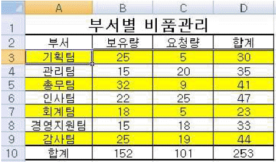
- =MOD(COLUMN(),2)=1
- =MOD(ROW(),2)=1
- =COLUMN()/2=1
- =ROW()/2=1
(정답률: 66%)
33. 다음 중 데이터 입력 및 편집에 대한 설명으로 옳지 않은 것은?
- 숫자 데이터를 문자 데이터로 입력하려면 숫자 앞에 문자 접두어(인용 부호')를 먼저 입력한 후 이어서 입력한다.
- 한 셀 내에서 줄을 바꾸어 입력하려면 <Alt>+<Enter> 키를 이용한다.
- 여러 셀을 선택하여 동일한 데이터를 한 번에 입력하려면 입력하자마자 <Shift>+<Enter>키를 누른다.
- [홈]탭 [편집]그룹의 [지우기]를 이용하면 셀에 입력된 데이터나 서식, 메모 등을 선택하여 지울 수 있다.
(정답률: 70%)
34. 다음 중 정보 함수에 대한 설명으로 옳은 것은?
- ISBLANK 함수: 값이 '0' 이면 TRUE를 반환한다.
- ISERR 함수: 값이 #N/A를 제외한 오류 값이면 TRUE를 반환한다.
- ISODD 함수: 숫자가 짝수이면 TRUE를 반환한다.
- TYPE 함수: 값의 데이터 형식을 나타내는 문자를 반환 한다.
(정답률: 60%)
35. 다음 중 각 차트 종류에 대한 설명으로 적절하지 않은 것은?
- 영역형 차트: 워크시트의 여러 열이나 행에 있는 데이터에서 시간에 따른 변동의 크기를 강조하여 합계 값을 추세와 함께 살펴볼 때 사용된다.
- 표면형 차트: 일반적인 척도를 기준으로 연속적인 데이터를 표시할 수 있으므로 일정 간격에 따른 데이터의 추세를 표시할 때 사용된다.
- 도넛형 차트: 여러 열이나 행에 있는 데이터에서 전체에 대한 각 부분의 관계를 비율로 나타내어 각 부분을 비교할 때 사용된다.
- 분산형 차트: 여러 데이터 계열에 있는 숫자 값 사이의 관계를 보여 주거나 두 개의 숫자 그룹을 xy 좌표로 이루어진 하나의 계열로 표시할 때 사용된다.
(정답률: 52%)
36. 다음 중 아래 차트에 대한 설명으로 옳지 않은 것은?
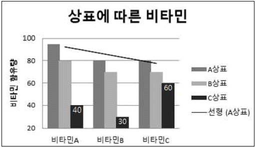
- [데이터 계열 서식] 대화상자에서 '계열 겹치기' 값이 0보다 작게 설정되었다.
- 'A상표' 계열에 선형 추세선이 추가되었고, 'C상표' 계열에는 데이터 레이블이 추가되었다.
- 세로(값) 축의 주 단위는 20이고, 최소값과 최대값은 각각 20과 100으로 설정되었다.
- 기본 세로 축 제목은 '제목 회전'으로 “비타민 함유량”이 입력되었다.
(정답률: 76%)
37. 다음 중 [페이지 레이아웃] 보기 상태에서 설정 가능한 설명으로 옳지 않은 것은?
- 눈금자, 눈금선, 머리글 등을 표시하거나 숨길 수 있다.
- 마우스로 페이지 구분선을 클릭하여 페이지 나누기 위치를 조정할 수 있다.
- 기본 보기에서와 같이 셀 서식을 변경하거나 수식 작업을 할 수 있다.
- 머리글과 바닥글을 짝수 페이지와 홀수 페이지에 각각 다르게 지정할 수 있다.
(정답률: 45%)
38. 다음 중 아래와 같이 워크시트에 데이터가 입력되어 있는 경우, 보기의 수식과 그 결과 값으로 옳지 않은 것은?
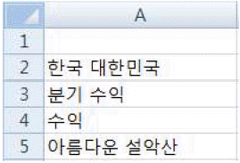
- =MID(A5,SEARCHB(A1,A5)+5,3) → '설악산'
- =REPLACE(A5,SEARCHB("한",A2),5,"") → '설악산'
- =MID(A2,SEARCHB(A4,A3),2) → '민국'
- =REPLACE(A3,SEARCHB(A4,A3),2,"명세서") → '분기명세서'
(정답률: 60%)
39. 아래 시트에서 [D2:D5] 영역을 선택한 후 배열 수식으로 한 번에 금액을 구하려고 한다. 다음 중 이를 위한 수식으로 옳은 것은? (금액 = 수량 * 단가)
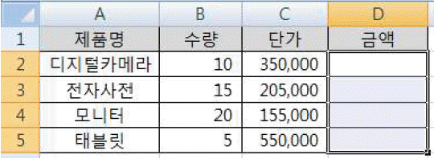
- {=B2*C2}
- {=B2:B5*C2:C5}
- {=B2*C2:B5*C5}
- {=SUMPRODUCT(B2:B5,C2:C5)}
(정답률: 61%)
40. 아래 워크시트의 [C3:C15] 영역을 이용하여 출신지역 별로 인원수를 [G3:G7] 영역에 계산하려고 한다. 다음 중 [G3] 셀에 수식을 작성한 뒤 채우기 핸들을 사용하여 [G7] 셀까지 수식 복사를 할 경우 [G3] 셀에 입력할 수식으로 옳은 것은?
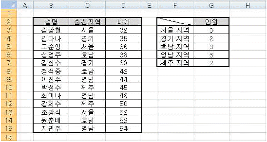
- =SUM(IF($C$3:$C$15=LEFT(F3,2),1,0))
- {=SUM(IF($C$3:$C$15=LEFT(F3,2),1,0))}
- =SUM(IF($C$3:$C$15=LEFT(F3,2),1,1))
- {=SUM(IF($C$3:$C$15=LEFT(F3,2),1,1))}
(정답률: 59%)
3과목: 데이터베이스 일반
41. 다음 중 테이블의 '디자인 보기'에서 필드마다 <한/영> 키를 사용하지 않고도 데이터 입력 시의 한글이나 영문 입력 상태를 정할 수 있는 필드 속성은?
- 캡션
- 문장 입력 시스템 모드
- IME 모드
- 스마트 태그
(정답률: 75%)
42. 다음 중 테이블의 조회 속성에 대한 설명으로 옳지 않은 것은?
- 조회 속성을 이용하면 사용자가 직접 값을 입력하는 과정에서 발생하는 오류를 줄일 수 있다.
- 조회 열에서 다른 테이블이나 쿼리에 있는 값을 조회 하도록 설정할 수 있다.
- 원하는 값을 직접 입력하여 조회 목록을 만들 수 있다.
- 조회 목록으로 표시할 열의 개수는 변경할 수 없으며, 행 원본에 맞추어 자동으로 설정된다.
(정답률: 74%)
43. 다음 중 특정 필드의 입력 마스크를 'LA09#'으로 설정하였을 때 입력 가능한 데이터로 옳은 것은?
- 12345
- A상345
- A123A
- A1BCD
(정답률: 70%)
44. 다음 중 하위 보고서 작성에 대한 설명으로 옳지 않은 것은?
- 하위 보고서를 통해서 기본 보고서 내용을 보강한 보고서를 만들 수 있다.
- 디자인 보기 화면에서는 삽입된 하위 보고서의 크기를 조절할 수 없다.
- 일대다 관계에 있는 테이블이나 쿼리를 효과적으로 표시할 수 있다.
- 일반적으로 하위 보고서의 개수에는 제한이 없으나 하위 보고서를 중첩하는 경우 7개의 수준까지 중첩시킬 수 있다.
(정답률: 56%)
45. '부서코드'를 기본 키로 하는 [부서] 테이블과 '부서 코드'를 포함한 사원정보가 있는 [사원] 테이블을 이용하여 관계를 설정하였다. 다음 중 이와 관련된 관계 설정에 대한 설명으로 옳은 것은? (단, 한 부서에는 여러 명의 사원이 소속되어 있으며, 한 사원은 하나의 부서에 소속된다.)
- '항상 참조 무결성 유지'를 설정하면 [사원] 테이블에 입력하려는 '사원'의 '부서코드'는 반드시 [부서] 테이블에 존재해야만 한다.
- '항상 참조 무결성 유지'를 설정하면 [사원] 테이블에서 '부서코드'를 수정하는 경우 [부서] 테이블의 해당 '부서코드'도 자동으로 수정된다.
- '항상 참조 무결성 유지'를 설정하지 않더라도 [사원] 테이블에 입력하려는 '사원'의 '부서코드'는 반드시 [부서] 테이블에 존재해야만 한다.
- '항상 참조 무결성 유지'를 설정하지 않더라도 [사원] 테이블에서 사용 중인 '부서코드'는 [부서] 테이블에서 삭제할 수 없다.
(정답률: 55%)
46. 다음 중 아래 VBA 코드를 실행했을 때 MsgBox에 표시되는 값은?
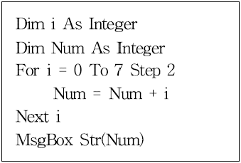
- 7
- 12
- 24
- 28
(정답률: 58%)
47. 다음 중 매크로에 대한 설명으로 옳지 않은 것은?
- 매크로는 작업을 자동화하고 폼, 보고서 및 컨트롤에 기능을 추가하는 데 사용되는 도구이다.
- 특정 조건이 참일 때에만 매크로 함수를 실행하도록 설정할 수 있다.
- 하나의 매크로에는 하나의 매크로 함수만 포함될 수있다.
- 매크로를 컨트롤의 이벤트 속성에 포함시킬 수 있다.
(정답률: 77%)
48. 다음 중 데이터베이스의 3단계 구조 중 하나로 데이터베이스 전체의 논리적인 구조를 보여주는 스키마는?
- 외부 스키마
- 서브 스키마
- 개념 스키마
- 내부 스키마
(정답률: 70%)
49. 다음 중 정규화에 대한 설명으로 옳지 않은 것은?
- 한 테이블에 너무 많은 정보를 포함해서 발생하는 이상 현상을 제거한다.
- 정규화를 실행하면 모든 테이블의 필드 수가 동일해진다.
- 정규화를 실행하면 테이블이 나누어져 최종적으로는 일관성을 유지하게 된다.
- 정규화를 실행하는 목적 중 하나는 데이터 중복의 최소화이다.
(정답률: 71%)
50. 다음 중 보고서를 작성하는 방법으로 옳지 않은 것은?
- [보고서] 도구를 사용하여 보고서 만들기
- [보고서 디자인] 도구를 사용하여 보고서 만들기
- [새 보고서] 도구를 사용하여 보고서 만들기
- [데이터] 도구를 사용하여 보고서 만들기
(정답률: 62%)
51. 다음 중 보고서의 각 구역에 대한 설명으로 옳지 않은 것은?
- 보고서 바닥글 영역에는 로고, 보고서 제목, 날짜 등을 삽입하며, 보고서의 모든 페이지에 출력된다.
- 페이지 머리글 영역에는 열 제목 등을 삽입하며, 모든 페이지의 맨 위에 출력된다.
- 그룹 머리글/바닥글 영역에는 일반적으로 그룹별 이름, 요약 정보 등을 삽입한다.
- 본문 영역은 실제 데이터가 레코드 단위로 반복 출력되는 부분이다.
(정답률: 69%)
52. 다음 중 보고서에서 페이지 번호를 표시하는 컨트롤 원본과 그 표시 결과가 옳은 것은? (단, 현재 페이지는 1페이지이고, 전체 페이지는 5페이지임)
- ="Page" & [Page] & "/" & [Pages] → 1/5 Page
- =[Page] & "페이지" → 5페이지
- =[Page] & "/" & [Pages] & " Page" → Page1/5
- =Format([Page], "00") → 01
(정답률: 65%)
53. 아래는 쿼리의 '디자인 보기'이다. 다음 중 아래 쿼리의 실행 결과로 옳은 것은?
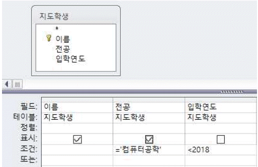
- 2018년 전에 입학했거나 컴퓨터공학을 전공하는 지도 학생들의 이름과 전공을 표시
- 2018년 전에 입학하여 컴퓨터공학을 전공하는 지도 학생들의 이름과 전공을 표시
- 2018년 전에 입학했거나 컴퓨터공학을 전공하는 지도 학생들의 이름, 전공, 입학연도를 표시
- 2018년 전에 입학하여 컴퓨터공학을 전공하는 지도 학생의 이름, 전공, 입학연도를 표시
(정답률: 67%)
54. 다음 중 SELECT문에 대한 설명으로 옳지 않은 것은?
- FROM 절에는 SELECT 문에 나열된 필드를 포함하는 테이블이나 쿼리를 지정한다.
- 검색 결과에 중복되는 레코드를 없애기 위해서는 'DISTINCT' 조건자를 사용한다.
- AS 문은 필드 이름이나 테이블 이름에 별명을 지정할 때 사용한다.
- GROUP BY 문으로 레코드를 결합한 후에 WHERE 절을 사용하면 그룹화된 레코드 중 WHERE 절의 조건을 만족하는 모든 레코드가 표시된다.
(정답률: 62%)
55. 다음 중 분할 표시 폼에 대한 설명으로 옳지 않은 것은?
- 분할된 화면에서 데이터를 [폼 보기]와 [데이터시트 보기]로 동시에 볼 수 있다.
- 폼의 두 보기 중 하나에서 필드를 선택하면 다른 보기에서도 동일한 필드가 선택된다.
- 데이터 원본을 변경하는 경우 데이터시트 보기에서만 데이터를 변경할 수 있다.
- 데이터시트가 표시되는 위치를 폼의 위쪽, 아래쪽, 왼쪽, 오른쪽 중에서 선택할 수 있다.
(정답률: 53%)
56. 다음 중 [학생] 테이블에서 '학년' 필드가 1인 레코드의 개수를 계산하고자 할 때의 수식으로 옳은 것은? 단, [학생] 테이블의 기본 키는 '학번' 필드이다.
- =DLookup("*","학생","학년=1")
- =DLookup(*,학생,학년=1)
- =DCount(학번,학생,학년=1)
- =DCount("*","학생","학년=1")
(정답률: 60%)
57. 다음 중 아래 SQL문에 대한 설명으로 옳은 것은?
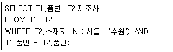
- 테이블 T2에서 소재지가 서울 또는 수원 이거나 T1과 품번이 일치하는 레코드들만 선택된다.
- 테이블 T1과 T2의 품번이 일치하면서 소재지는 서울과 수원을 제외한 레코드들만 선택된다.
- 테이블 T1의 품번 필드와 테이블 T2의 소재지 필드만 SQL 실행 결과로 표시된다.
- 테이블 T1의 품번 필드와 테이블 T2의 제조사 필드만 SQL 실행 결과로 표시된다.
(정답률: 50%)
58. 다음 중 아래와 같은 결과를 표시하는 SQL문은?
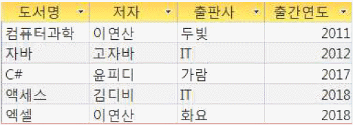
- SELECT * FROM book ORDER BY [저자], [출간연도];
- SELECT * FROM book ORDER BY [출간연도] DESC, [출판사] DESC;
- SELECT * FROM book ORDER BY [출간연도] ASC, [저자] ASC;
- SELECT * FROM book ORDER BY [저자] DESC, [출간 연도] ASC;
(정답률: 54%)
59. 다음 중 폼의 속성에 대한 설명으로 옳은 것은?
- 팝업 속성을 설정하면 포커스를 다른 개체로 이동하기 위해서는 반드시 폼을 닫아야 한다.
- '레코드 잠금' 속성의 기본 값은 '잠그지 않음'이며, 이 경우 레코드 편집 작업이 완료되기 전에 다른 사용자가 레코드를 변경할 수 있다.
- 그림 맞춤 속성은 폼의 크기가 이미지의 원래 크기와 다른 경우 다양한 확대/축소 유형을 선택할 수 있다.
- 레코드 집합 종류 속성의 값이 '다이너셋'인 경우 원본 테이블의 업데이트는 안되며, 조회만 가능하다.
(정답률: 42%)
60. 다음 중 폼에서 컨트롤의 탭 순서를 변경하는 방법으로 옳지 않은 것은?
- 마법사 또는 레이아웃과 같은 도구를 사용하여 폼을 만든 경우 컨트롤이 폼에 표시되는 순서(위쪽에서 아래쪽 및 왼쪽에서 오른쪽)와 같은 순서로 탭 순서가 설정된다.
- 기본적으로는 컨트롤을 작성한 순서대로 탭 순서가 설정되며, 레이블에는 설정할 수 없다.
- [탭 순서] 대화상자를 이용하면 컨트롤의 탭 순서를 컨트롤 이름 행을 드래그해서 조정할 수 있다.
- 탭 순서에서 컨트롤을 제거하려면 컨트롤의 탭 정지 속성을 '예'로 설정한다.
(정답률: 53%)